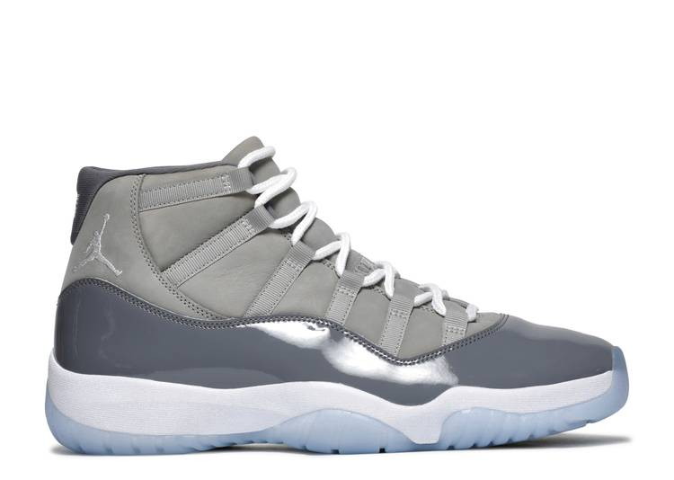

Air Jordan
Air jordan 11 retro 'cool grey' 2021
select us mens
About this product
Recalling the 'Thunder' colorway, the Air Jordan 4 Retro 'Red Thunder' emerges with similar color-blocking, albeit in a different mix of hues. The shoe's upper is built with a black nubuck base, highlighted by red throughout, including on the molded eyelets and quarter panel. More red marks the midsole, which includes visible Air for cushioning, while a two-tone rubber outsole is included for traction.